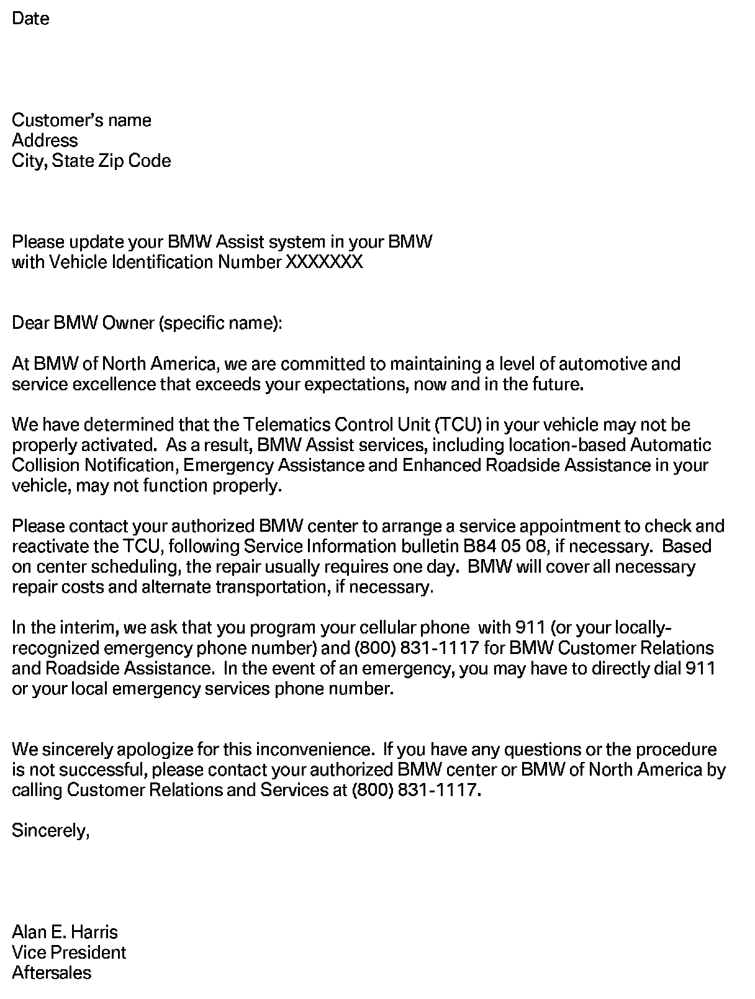

Campaign - Reactivating The Telematics Control Unit
SI B84 05 08Communication Systems
September 2008
Technical Service
PERFORM THE PROCEDURE OUTLINED IN THIS SERVICE INFORMATION ON ALL
AFFECTED VEHICLES THE NEXT TIME THEY ARE IN THE SHOP FOR MAINTENANCE
OR REPAIRS AND PRIOR TO RETAIL DELIVERY.
SUBJECT
Service Action: Reactivation of Telematics Control Unit (TCU)
MODEL
E53 (X5) with Premium Package (ZPP) or BMW Assist (SA 639)
E60 (5 Series)
E90 (3 Series) with Premium Package (ZPP) or BMW Assist (SA 639)
E83 (X3) with Premium Package (ZPP) or BMW Assist (SA 639)
SITUATION
The Telematics Control Unit (TCU) in the vehicle may not have been properly activated. This may cause the manual and automatic emergency call and roadside call (BMW Assist) not to function. This Service Action reactivates the TCU by assigning a new Mobile Identification Number (MIN) and Mobile Device Number (MDN) to the TCU.
Copies of the customer notification letter and Q&A are included.
On I/K-bus vehicles (E53, E83), for customer convenience, a step-by-step procedure was included in the customer letter so that the customer can reactivate the TCU without having to make a service appointment.
AFFECTED VEHICLES
This Service Action involves 3 Series, 5 Series, X3 and X5 vehicles with BMW Assist, produced between 2/2006 and 9/2007.
In order to determine whether a specific vehicle is affected by this Service Action, refer to the chassis numbers listed below.
Note:
The vehicles affected by this Service Action will not appear on DCS Vehicle History Inquiry Reports.
PROCEDURE FOR I/K-BUS VEHICLES (E.G., E53, E83)
1. Check the BMW Assist account status on DCSnet. The BMW Assist services expiration date and TCU activation status can be checked
on DCSnet under Service/Vehicle History Inquiry. Refer to SI B02 01 06 (Updated DCSnet Vehicle History Inquiry information of BMW Assist) for more information.
^ If no information is displayed on DCSnet, check the account status by calling BMW Assist.
^ If the customer is NOT an active BMW Assist services client, no further action is required.
Vehicles within the Verizon Wireless Network
2. Simultaneously press the Roadside Assistance "Wrench" button and the mayday "SOS" button for more than 8 seconds. The TCU will automatically place two calls approximately 20 seconds apart.
^ First call - "*22890" will be displayed on the radio or status line on the Board Monitor (BM). The TCU will make a connection to the network provider. A verbal message will be heard that the phone is being programmed. At the end of the programming, a message should be heard that the phone was successfully programmed.
^ Second call - "*22891" will be displayed on the radio or status line on the Board Monitor (BM). The TCU will make a connection to the network provider. A verbal message will be heard that the roaming capabilities are being updated. At the end of the call, a message should be heard that the roaming capabilities were successfully updated.
3. If you do not hear the message at the completion of each call, the update was NOT successfully completed, and the process must be repeated.
Note:
If the system does not attempt to make the call or if "BMW Assist Inactive" is displayed on the radio or BM, please refer to SI B84 24 06.
4. Switch the ignition off for 10 seconds. The new MIN and MDN will then be imported into the TCU.
5. Test the BMW Assist service for proper operation by placing a test call (press the Roadside Assistance "Wrench" button). Make sure that the BMW Assist Response Center has received the correct MIN/MDN, VIN and location for the vehicle. Have the representative update his or her records as needed.
Vehicles outside the Verizon Wireless Network
6. The vehicle must be located within the Verizon Wireless network for the above reactivation procedure to work properly. See the attachment to SI B84 15 03 for the list of centers located outside this network. If the vehicle is not in the Verizon Wireless network, perform steps one and
two and then follow these additional steps.
^ Create a PuMA case to receive TCU shipping authorization.
^ Remove the TCU from the vehicle.
^ Send the TCU, the BMW Assist TCU Reactivation Form with the new MIN/MDN numbers, and a copy of the PuMA case via FedEx to:
BMW of North America, LLC
Attn: Teileclearing TCU (TCU Reactivation B84 05 08)
150 Chestnut Ridge Road
Woodcliff Lake NJ 07677
(201) 307-4000
^ BMW of North America, LLC, will reactivate the TCU and ship it out on the same business day that it was received.
^ After receiving the TCU back from BMW of North America, reinstall the TCU, and place a BMW Assist call, as outlined in step 4.
PROCEDURE FOR MOST-BUS VEHICLES (E.G., E60, E90)
1. Check the BMW Assist account status on DCSnet. The BMW Assist services expiration date and TCU activation status can be checked on DCSnet under Service/Vehicle History Inquiry. Refer to SI B02 01 06 (Updated DCSnet Vehicle History Inquiry information of BMW
Assist) for more information.
^ If no information is displayed on DCSnet, check the account status by calling BMW Assist.
^ If the customer is NOT an active BMW Assist services client, no further action is required.
2. Obtain the new Mobile Identification Number (MIN) and Mobile Device Number (MDN) from the attached file named "B840508_VIN_MIN_MDN_List".
3. Use the following path within the DIS or GT1 to check and write the new MIN and MDN.
^ Perform a Short Test
^ Function Selection
^ Complete vehicle
^ Body
^ Audio, video, Telephone and navigation (MOST)
^ Telecommunication / Telephone
^ Fixed Installation (this selection is omitted on 3 Series vehicles without CCC)
^ Telematic Control Module (US); note: This step is deleted in DIS V46.
^ Reactivate internal telephone module
^ Select test module (Reactivate internal telephone module B8400_00358)
The following screen will be displayed.
4. Select Option 1 (Read MIN/MDN/SID/NID).
^ Select the right screen arrow.
5. Print the screen to record the original ESN.
^ Select the right screen arrow.
6. Check the TCU's Electronic Serial Number (ESN) to confirm whether it corresponds to the information listed on the attached file named "B840508_VIN_MIN_MDN_List".
^ If the ESN matches the listed ESN, proceed to step 7.
^ If the ESN is different, do NOT write the new number into the TCU. Document the ESN, MIN and MDN in the warranty claim. Proceed to step 16.
7. Select Option 2 (Write MIN).
^ Select the right screen arrow.
8. Using the number key pad on the left side of the screen, enter the new MIN.
Select the right screen arrow.
9. Verify the new MIN.
^ Select the right screen arrow.
10. Select Option 3 (Write MDN), and select the
right arrow.

11. Using the number key pad on the left side of the screen, enter the new MDN.
elect the right screen arrow.
12. Verify the new MDN.
Select the right screen arrow.
13. Select Option 1 (Read MIN/MDN/SID/NID).
Select the right screen arrow.

14. Check that the new MIN and MDN have been written correctly to the TCU.
Select the right screen arrow.
15. Select Option 5 (End test module).
^ Select the right screen arrow.
INITIALIZATION OF BMW ASSIST SERVICES
16. The BMW Assist services initialization procedure must be completed per SI B84 15 03 for all vehicles.
^ The vehicle must be in the Verizon Wireless Network for the initialization procedure to work properly. If the vehicle is not in the Verizon Wireless Network, perform the outlined procedure and then follow these additional steps.
^ Create a PuMA case to receive TCU shipping authorization.
^ Remove the TCU from the vehicle.
^ Send the TCU, BMW Assist TCU Reactivation Form with the new MIN/MDN numbers, and a copy of the PuMA case via FedEx to:
BMW of North America, LLC
Attn: Teileclearing TCU (TCU Reactivation B84 05 08)
150 Chestnut Ridge Road
Woodcliff Lake NJ 07677
(201) 307-4000
^ BMW of North America, LLC, will initialize the TCU and ship it out on the same business day that it was received.
^ After receiving the TCU back from BMW of North America, reinstall the TCU and place a BMW Assist call, as outlined in step 17.
^ All shipping charges (both ways) are to be billed to the dealer's FedEx account. On the warranty claim, submit the FedEx shipping charges (double the amount provided to you by the TC Group to cover the shipment both ways) in the sublet section (using sublet code 4).
TEST OF BMW ASSIST SERVICES
17. Test the BMW Assist service for proper operation by placing a test call (press the SOS or Roadside Assistance "Wrench" button). Make sure that the BMW Assist Response Center has received the correct MIN/MDN, VIN and location for the vehicle. Have the representative update his or her records as needed.
LABEL INSTRUCTIONS
This Service Action has been assigned code number 526. After the vehicle has been checked, and corrected if necessary, obtain a label (SD 92-352) and:
a. Emboss your BMW dealer warranty number in the middle of the label (1);
b. Punch out code number 526 printed on the label (2); and
c. Affix the label to the B-pillar as shown.
If the vehicle already has a label from a previous Service Action/Recall Campaign, affix the new label next to the old one. Do not affix one label on top of another one, because a number from an underlying label could appear in the punched-out hole of the new label.
WARRANTY INFORMATION
Covered under the terms of the BMW New Vehicle Limited Warranty.
TCU shipping charges for BMW centers outside Verizon Wireless network
All shipping charges (both ways) are to be billed to the dealer's FedEx account. On the warranty claim, submit the FedEx shipping charges (double the amount provided to you by the TC Group to cover the shipment both ways) in the sublet section (using sublet code 4).
RENTAL VEHICLES
Retailers participating in the Retailer Administered Customer Assistance Program and the BMW Service Loaner Car Program may self-authorize claims for reimbursement of rental costs from independent rental agencies in certain situations. For more details refer to SI B01 07 03.
ATTACHMENTS
view PDF attachment B840508Customer_Letter_X3_X5.

view PDF attachment B840508Customer_Letter_MOST_bus.
view PDF attachment B840508QA.
view PDF attachment B840508VIN_MDN_MIN_list.

Disclaimer